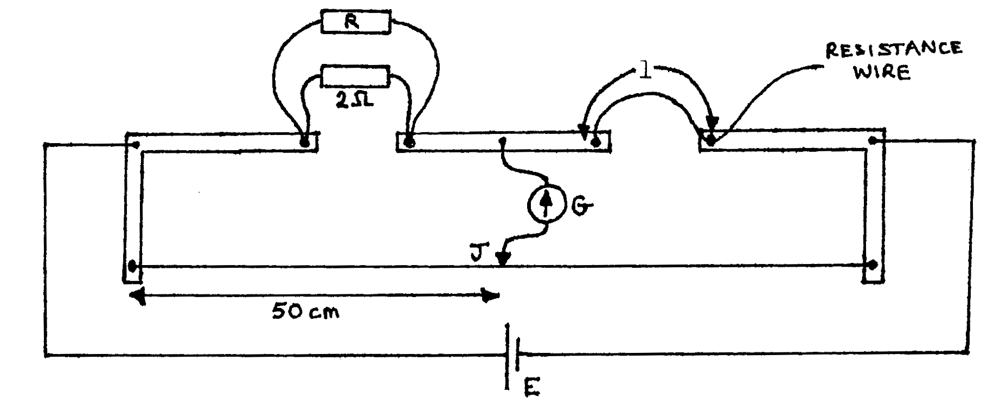

86-Q3: Resistivity, Using a Wheatstone Bridge¶
Time 1\(\frac{1}{2}\) hr.
Apparatus¶
Metre bridge & jockey; resistance wire (length \(\approx\) \(1\text{m}\), resistance \(\approx 2 \Omega\) but not less); metre rule; resistors (\(0.5\Omega, 1\Omega, 2\times 2\Omega, 5\Omega, 10\Omega, 20\Omega\)); \(1.5\text{V}\) cell; galvanometer; 4 connecting leads (3 long, 1 short); 1 sheet graph paper; micrometer.
The aim of this experiment is to determine the electrical resistivity of the wire provided. Proceed as follows:
- Set up a slide-wire metre bridge as illustrated below where E is a cell, G is a Galvanometer, length \(l\) of the resistance wire is connected across the right-hand gap of the bridge, and the jockey or slider J is placed at the 50text{cm}` mark.
- With R \(= 20 \Omega\), find the value of length \(l\) for which the galvanometer gives zero deflection when the slider is tapped onto the 50text{cm}` mark as shown below. (2 marks)
- Repeat the procedure in (b) for values of R equal to \(10\Omega, 5\Omega, 2\Omega, 1 \Omega, \text{ and } 0.5 \Omega\). (8 marks)

Calculate and tabulate the values of \(\frac{1}{R} \text{ and } \frac{1}{l}\) for the values of \(R\) equal to \(20\Omega, 10\Omega, 5\Omega, 2\Omega, 1\Omega, \text{ and } 0.5\Omega\) obtained in (b) and (c) above. (7 marks)
By means of the micrometer screw gauge provided, measure the diameter of the resistance wire, and hence calculate its average diameter \(d\). (5 marks)
Plot a graph of \(\frac{1}{R} \text{ vs. } \frac{1}{l}\) (whose values are recorded in i above) and determine the gradient. (12, 5 marks)
Determine the resistivity \(\rho\) of the resistance wire given that:
\[\frac{1}{R} = \frac{A}{\rho} \frac{1}{l} - \frac{1}{2}\]Where \(A\) is the cross-sectional area of the resistance wire. (4, 7 marks)